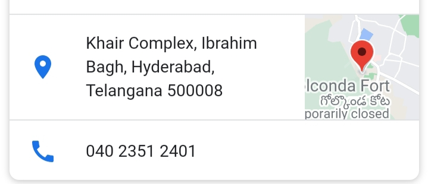
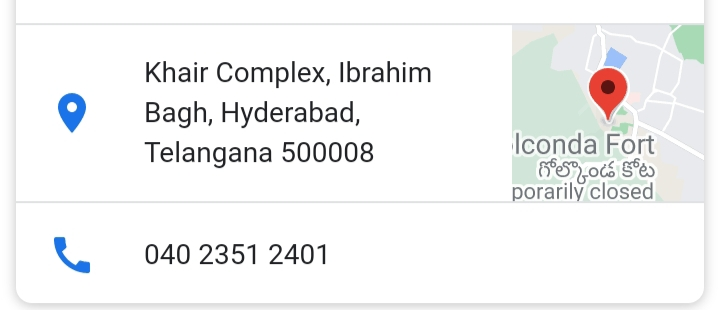
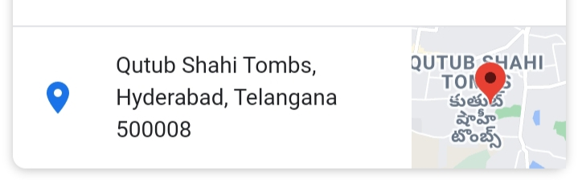
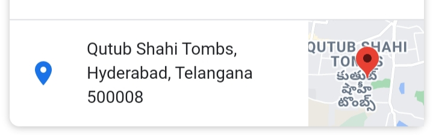

घोल्कोन्दा फ़ोर्त्
 

एतिहसिक् धरोऽरनां निधिः अस्ति - तेलंगाना - प्रदेशः
एतिहसिक् धरोऽरनां निधिः अस्ति - तेलंगाना - प्रदेशः
दक्षिणभारतस्य नगरे गोल्कुण्डा नाम्नः दुर्गाः अस्ति | सः मुलरुपेन मन्काल नाम्ना प्रसिदः आसीत | गोल्कुण्डा दुर्गस्य निर्माणम सर्वप्रथं काक्तिम् जनाः अकुर्वर्न |तत्पश्चात रानी रुद्रमा देवी तस्याः उताराधिकारि प्रतापरुद्रः
च अस्य दुर्गस्य अयं दुर्गः एन्द्रजालिक ध्वनिक प्रनाल्मयी प्रसिदः अस्ति | दुर्गस्य विशालानि द्वाराणि लोहस्य प्रस्त्रेयः सिज्ज्तानि सन्ति | वर्तमान समये गोल्कुण्डा दुर्गः उनेस्को संस्थायाः विश्व धरोहारं अस्ति|
कुतुब शाही मकबरे
.jpeg) 

कुतुब शाही मकबरे, गुंबददार ग्रेनाइट के 21 संरचनाओं का यह परिसर, हैदराबाद के सबसे पुराने स्मारकों में से एक माना जाता है। भारतीय और फ़ारसी स्थापत्य शैली के एक समामेलन को समेटते हुए, ये मकबरे अपने नाजुक चूने वाले प्लास्टर के
काम और स्तम्भों पर जटिल नक्काशी वाले काम के चलते प्रख्यात हैं। परिसर में कई मस्जिदें भी हैं। सुन्दर लैंडस्केप से बने नीरव बगीचों के मध्य स्थित ये मकबरे, इस तथ्य के लिए प्रसिद्ध हैं कि वे दुनिया के उन चंद स्थानों में से
हैं, जहां पूरे राजवंश को एक ही स्थान पर दफनाया गया है। यह कहा जाता है कि आठ में से सात कुतुब शाही शासक यहां दफन हैं। हैदराबाद के संस्थापक, मोहम्मद कुली का मकबरा इन सभी मकबरों में सबसे अच्छा है जो इस परिसर के एक किनारे पर,
एक ऊंचे चबूतरे पर बना है। यहां से गोलकुंडा किले को स्पष्ट देखा जा सकता है, जो इससे सिर्फ 2 किमी की दूरी पर है।
|